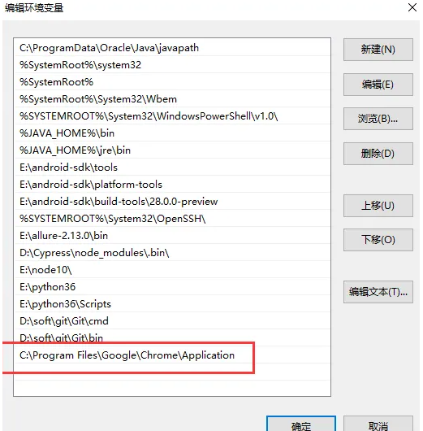

Playwright高级
可见即可得爬取（重点）
| Python |
|---|
| from playwright.sync_api import sync_playwright
from lxml import etree
with sync_playwright() as p:
bro = p.chromium.launch(headless=False)
page = bro.new_page()
page.goto('https://jzsc.mohurd.gov.cn/data/company')
page.wait_for_timeout(2000)
#获取页面的页面源码数据
page_text = page.content() #可见即可得
page_text_list = [page_text] #用来存储多页对应的页面源码数据
for i in range(3): #重复循环进行下一页按钮的点击
#点击下一页的按钮
page.locator('.btn-next').click()
page.wait_for_timeout(2000)
page_text = page.content()
page_text_list.append(page_text)
#可以将多页的页面源码数据进行数据解析
for page_text in page_text_list:
print('进行当前页面的数据解析')
tree = etree.HTML(page_text)
tr_list = tree.xpath('//*[@id="app"]/div/div/div[2]/div[3]/div[1]/div[3]/table/tbody/tr')
for tr in tr_list:
title = tr.xpath('./td[3]/div/span/text()')[0]
name = tr.xpath('./td[4]/div/text()')[0]
print(title,name)
page.close()
bro.close()
|
Context上下文（重点）
浏览器的上下文管理对象Context可以用于管理Context打开/创建的多个page页面。并且可以创建多个Context对象，那么不同的Context对象打开/创建的page之间是相互隔离的（每个Context上下文都有自己的Cookie、浏览器存储和浏览历史记录）。
| Python |
|---|
| from playwright.sync_api import sync_playwright
#点击百度首页中左上角的全部链接，以打开多个不同的page页面
with sync_playwright() as p:
bro = p.chromium.launch(headless=False,slow_mo=1000)
#创建上下文管理对象
context = bro.new_context()
#基于上下文管理对象打开一个page页面
page = context.new_page()
page.goto('https://www.baidu.com')
a_list = page.locator('//*[@id="s-top-left"]/a').all()
for a in a_list:
a.click()
#可以获取上下文管理对象目前创建好的所有的page页面
pages = context.pages
for page in pages:
title = page.title()
print(title)
page.close()
bro.close()
|
- 通过sub_page的title判断进行sub_page页面的切换和管理
| Python |
|---|
| from playwright.sync_api import sync_playwright
#封装页面切换的函数
def switch_to_page(context,title):
for page in context.pages:
if title == page.title():
#浏览器停留在此page页面
page.bring_to_front()
return page
#点击百度首页中左上角的全部链接，以打开多个不同的page页面
with sync_playwright() as p:
bro = p.chromium.launch(headless=False,slow_mo=1000)
#创建上下文管理对象
context = bro.new_context()
#基于上下文管理对象打开一个page页面
page = context.new_page()
page.goto('https://www.baidu.com')
#点击百度首页中左上角的全部链接，以打开多个不同的page页面
a_list = page.locator('//*[@id="s-top-left"]/a').all()
for a in a_list:
a.click()
#page页面的切换
select_page = switch_to_page(context,'hao123_上网从这里开始')
#在指定的page中进行相关操作
select_page.locator('//*[@id="search"]/form/div[2]/input').fill('测试测试')
select_page.locator('//*[@id="search"]/form/div[3]/input').click()
page.close()
bro.close()
|
- 实战案例：
- 抓取bili中指定关键字搜索页面中视频的标题和作者名称
| Python |
|---|
| from playwright.sync_api import sync_playwright
from lxml import etree
#封装页面切换的函数
def switch_to_page(context,title):
for page in context.pages:
if title == page.title():
#浏览器停留在此page页面
page.bring_to_front()
return page
with sync_playwright() as p:
bro = p.chromium.launch(headless=False,slow_mo=1000)
context = bro.new_context()
page = context.new_page()
page.goto('https://www.bilibili.com/')
#xpath定位
page.locator('//*[@id="nav-searchform"]/div[1]/input').fill('Python教程')
page.locator('//*[@id="nav-searchform"]/div[2]').click()
#切换到新打开的page中
select_page = switch_to_page(context,'Python教程-哔哩哔哩_Bilibili')
page_text = select_page.content()
tree = etree.HTML(page_text)
div_list = tree.xpath('//*[@id="i_cecream"]/div/div[2]/div[2]/div/div/div/div[3]/div/div')
for div in div_list:
title = div.xpath('.//h3[@class="bili-video-card__info--tit"]/@title')[0]
author = div.xpath('.//span[@class="bili-video-card__info--author"]/text()')[0]
print(title,author)
page.close()
bro.close()
|
滑动验证 （理解代码）
- 基于opencv实现的免费操作:
- pip install opencv-python
- 可能会存在滑动误差，需要手动调整
| Python |
|---|
| #1.计算滑动的距离（get_distance）自定义函数
#2.模拟人的行为进行滑动（get_track） 自定义函数
from playwright.sync_api import sync_playwright
import cv2
from urllib import request
#获取要滑动的距离
def get_distance(background,gap):
#滑动验证码的整体背景图片
background = cv2.imread(background, 0)
#缺口图片
gap = cv2.imread(gap, 0)
res = cv2.matchTemplate(background, gap, cv2.TM_CCOEFF_NORMED)
#value就是cv2计算出来的滑动距离的像素值
value = cv2.minMaxLoc(res)[2][0]
#单位换算
return value * 278 / 360
#有的检测移动速度的 如果匀速移动会被识别出来，来个简单点的渐进
def get_track(distance): # distance为传入的总距离
# 移动轨迹
track = []
# 当前位移
current = 0
# 减速阈值
mid = distance * 4 / 5
# 计算间隔
t = 0.2
# 初速度
v = 1
while current < distance:
if current < mid:
# 加速度为2
a = 4
else:
# 加速度为-2
a = -3
v0 = v
# 当前速度
v = v0 + a * t
# 移动距离
move = v0 * t + 1 / 2 * a * t * t
# 当前位移
current += move
# 加入轨迹
track.append(round(move))
return track
with sync_playwright() as p:
bro = p.chromium.launch(headless=False)
page = bro.new_page()
#请求登录页面
page.goto('https://passport.jd.com/new/login.aspx?')
#进行用户名、密码的录入和登录按钮的点击
page.locator('//*[@id="loginname"]').fill('123456@qq.com')
page.wait_for_timeout(1000)
page.locator('//*[@id="nloginpwd"]').fill('123456@qq.com')
page.wait_for_timeout(1000)
page.locator('//*[@id="loginsubmit"]').click()
page.wait_for_timeout(2000)
#获取滑动验证码的背景图的图片链接和滑块的图片链接
bg_img_src = page.locator('.JDJRV-bigimg > img').get_attribute('src')
small_img_src = page.locator('.JDJRV-smallimg > img').get_attribute('src')
# 两张图片保存起来
request.urlretrieve(bg_img_src, "background.png")
request.urlretrieve(small_img_src, "gap.png")
#根据验证码的两张图片进行滑动距离的计算
distance = int(get_distance("background.png","gap.png"))
#定位到滑块标签
slide = page.locator('//*[@id="JDJRV-wrap-loginsubmit"]/div/div/div/div[2]/div[3]')
# 找到滑块在当前页面的坐标（这个会返回一个字典里边四个数字）
#{'x': 858, 'y': 339.9921875, 'width': 55, 'height': 55}
box = slide.bounding_box()
#让鼠标移动到滑块标签的中间上
page.mouse.move(box["x"] + box["width"] / 2, box["y"] + box["height"] / 2)
# 按下鼠标
page.mouse.down()
# 这里获取到滑块x坐标位置
x = box["x"] + 12 #加上一个数值调整滑动误差
# 滑动的长度放到轨迹加工一下得到一个轨迹
tracks = get_track(distance) #[1,5,8,9]
for track in tracks:
# 循环鼠标按照轨迹移动
page.mouse.move(x + track, 0)
x += track
# 移动结束鼠标释放
page.mouse.up()
page.wait_for_timeout(5000)
page.close()
bro.close()
|
| Python |
|---|
| #tujian.py
import base64
import json
import requests
# 一、图片文字类型(默认 3 数英混合)：
# 1 : 纯数字
# 1001：纯数字2
# 2 : 纯英文
# 1002：纯英文2
# 3 : 数英混合
# 1003：数英混合2
# 4 : 闪动GIF
# 7 : 无感学习(独家)
# 11 : 计算题
# 1005: 快速计算题
# 16 : 汉字
# 32 : 通用文字识别(证件、单据)
# 66: 问答题
# 49 :recaptcha图片识别
# 二、图片旋转角度类型：
# 29 : 旋转类型
#
# 三、图片坐标点选类型：
# 19 : 1个坐标
# 20 : 3个坐标
# 21 : 3 ~ 5个坐标
# 22 : 5 ~ 8个坐标
# 27 : 1 ~ 4个坐标
# 48 : 轨迹类型
#
# 四、缺口识别
# 18 : 缺口识别（需要2张图 一张目标图一张缺口图）
# 33 : 单缺口识别（返回X轴坐标 只需要1张图）
# 五、拼图识别
# 53：拼图识别
#函数实现忽略
def base64_api(uname, pwd, img, typeid):
with open(img, 'rb') as f:
base64_data = base64.b64encode(f.read())
b64 = base64_data.decode()
data = {"username": uname, "password": pwd, "typeid": typeid, "image": b64}
result = json.loads(requests.post("http://api.ttshitu.com/predict", json=data).text)
if result['success']:
return result["data"]["result"]
else:
return result["message"]
return ""
def getImgCodeText(imgPath,imgType):#直接返回验证码内容
#imgPath：验证码图片地址
#imgType：验证码图片类型
result = base64_api(uname='15027900535', pwd='15027900535', img=imgPath, typeid=imgType)
return result
|
| Python |
|---|
| from playwright.sync_api import sync_playwright
import tujian
from urllib import request
#有的检测移动速度的 如果匀速移动会被识别出来，来个简单点的渐进
def get_track(distance): # distance为传入的总距离
# 移动轨迹
track = []
# 当前位移
current = 0
# 减速阈值
mid = distance * 4 / 5
# 计算间隔
t = 0.2
# 初速度
v = 1
while current < distance:
if current < mid:
# 加速度为2
a = 4
else:
# 加速度为-2
a = -3
v0 = v
# 当前速度
v = v0 + a * t
# 移动距离
move = v0 * t + 1 / 2 * a * t * t
# 当前位移
current += move
# 加入轨迹
track.append(round(move))
return track
with sync_playwright() as p:
bro = p.chromium.launch(headless=False)
page = bro.new_page()
page.goto('https://passport.jd.com/new/login.aspx?')
page.locator('//*[@id="loginname"]').fill('123456@qq.com')
page.wait_for_timeout(1000)
page.locator('//*[@id="nloginpwd"]').fill('123456@qq.com')
page.wait_for_timeout(1000)
page.locator('//*[@id="loginsubmit"]').click()
page.wait_for_timeout(2000)
bg_img_src = page.locator('.JDJRV-bigimg > img').get_attribute('src')
# 图片保存起来
request.urlretrieve(bg_img_src, "background.png")
#基于图鉴平台实现计算滑动距离
distance = tujian.getImgCodeText('background.png',33)
distance = int(distance)
#定位到滑块标签
slide = page.locator('//*[@id="JDJRV-wrap-loginsubmit"]/div/div/div/div[2]/div[3]')
# 找到滑块在当前页面的坐标（这个会返回一个字典里边四个数字）
#{'x': 858, 'y': 339.9921875, 'width': 55, 'height': 55}
box = slide.bounding_box()
#让鼠标移动到滑块标签的中间上
page.mouse.move(box["x"] + box["width"] / 2, box["y"] + box["height"] / 2)
# 按下鼠标
page.mouse.down()
# 这里获取到滑块x坐标位置
x = box["x"] + 12 #加上一个数值调整滑动误差
# 滑动的长度放到轨迹加工一下得到一个轨迹
tracks = get_track(distance)
for track in tracks:
# 循环鼠标按照轨迹移动
page.mouse.move(x + track, 0)
x += track
# 移动结束鼠标释放
page.mouse.up()
page.wait_for_timeout(5000)
page.close()
bro.close()
|
文字点击验证码处理
| Python |
|---|
| from playwright.sync_api import sync_playwright
import tujian
from urllib import request
with sync_playwright() as p:
bro = p.chromium.launch(headless=False)
page = bro.new_page()
page.goto('https://passport.bilibili.com/login?from_spm_id=333.851.top_bar.login_window')
page.locator('//*[@id="app"]/div[2]/div[2]/div[3]/div[2]/div[1]/div[1]/input').fill('15027900535')
page.wait_for_timeout(1)
page.locator('//*[@id="app"]/div[2]/div[2]/div[3]/div[2]/div[1]/div[3]/input').fill('bobo@123.com')
page.wait_for_timeout(1)
page.locator('//*[@id="app"]/div[2]/div[2]/div[3]/div[2]/div[2]/div[2]').click()
page.wait_for_timeout(3)
#此处找到验证码图片将其截图保存
ele = page.locator('//div[@class="geetest_widget"]')
ele.screenshot(path='./code.png')
#找到ele在当前页面的坐标{'x': 858, 'y': 335, 'width': 55, 'height': 55}
box = ele.bounding_box()
#提交给打码平台
result = tujian.getImgCodeText('code.png',27)
# result = '154,251|145,167'
result_list = result.split('|')
# result_list ==> ['154,251','145,167']
# 6.根据识别出验证码的结果进行处理
for pos in result_list:
x = int(pos.split(',')[0])
y = int(pos.split(',')[1])
# page.mouse.move(box['x']+x,box['y']+y)
# page.mouse.down()
# page.mouse.up() #或者直接使用click方式
page.mouse.click(box['x']+x,box['y']+y)
page.wait_for_timeout(500)
# 找到确认按钮
submit = page.locator('//div[@class="geetest_commit_tip"]')
submit.click()
page.wait_for_timeout(5000)
page.close()
bro.close()
|
规避检测（重点）
如果网站有对Playwright采取监测机制的话，比如正常情况下我们用浏览器访问淘宝等网站的 window.navigator.webdriver的值为 undefined或者为false。而使用Playwright访问则该值为true。那么如何解决这个问题呢？
| Python |
|---|
| from playwright.sync_api import sync_playwright
with sync_playwright() as p:
bro = p.chromium.launch(headless=False)
page = bro.new_page()
page.goto('https://www.taobao.com/')
ret = page.evaluate('window.navigator.webdriver')
print(ret)
page.wait_for_timeout(30000)
page.close()
bro.close()
|
| Python |
|---|
| from playwright.sync_api import sync_playwright
with sync_playwright() as p:
bro = p.chromium.launch(headless=False)
context = bro.new_context()
#加载该js文件目的是给Playwright的浏览器模拟真实的浏览器环境
context.add_init_script(path='./stealth.min.js')
page = context.new_page()
page.goto('https://www.taobao.com/')
ret = page.evaluate('window.navigator.webdriver')
print(ret)
page.wait_for_timeout(30000)
page.close()
bro.close()
|
浏览器接管（王炸级别的操作）
window版本
- 首先右键 Chrome 浏览器桌面图标，找到 chrome.exe 的安装路径，然后将其添加到环境变量Path中
- 添加环境变量

- 在任意目录下新建一个空白文件夹(playwright_chrome_data)：用于保存接管的浏览器的运行数据。
- 打开cmd输入命令启动chrome浏览器:
chrome.exe --remote-debugging-port=8899 --user-data-dir="E:\playwright_chrome_data"
--remote-debugging-port 是指定浏览器运行端口，只要没被占用就行--user-data-dir 指定运行浏览器的运行数据，新建一个干净目录，不影响系统原来的数据
- 执行后会启动chrome浏览器
- 在你已经打开的浏览器页面，手工操作登录，登录成功后，让playwright 继续操作。
- Playwright接管浏览器
| Python |
|---|
| from playwright.sync_api import sync_playwright
with sync_playwright() as p:
browser = p.chromium.connect_over_cdp('http://localhost:8899/')
# 获取page对象
page = browser.contexts[0].pages[0]
#该操作会直接作用在接管的浏览器中
page.locator('//*[@id="kw"]').fill('haha')
print(page.url)
print(page.title())
|
| Python |
|---|
| from playwright.sync_api import sync_playwright
with sync_playwright() as p:
browser = p.chromium.connect_over_cdp('http://localhost:8899/')
# 获取page对象
page = browser.contexts[0].pages[0]
#该操作会直接作用在接管的浏览器中
page.locator('//*[@id="kw"]').fill('haha')
print(page.url)
print(page.title())
|
| Python |
|---|
| from playwright.sync_api import sync_playwright
from lxml import etree
with sync_playwright() as p:
browser = p.chromium.connect_over_cdp('http://localhost:8899/')
# 获取page对象
page = browser.contexts[0].pages[0]
#该操作会直接作用在接管的浏览器中
page.locator('//*[@id="searchKey"]').fill('中软国际')
page.get_by_text('查一下').click()
page.wait_for_timeout(2000)
tree = etree.HTML(page.content())
tr_list = tree.xpath('/html/body/div/div[2]/div[2]/div[3]/div/div[2]/div/table/tr')
for tr in tr_list:
title = tr.xpath('./td[3]/div/span[1]/span[1]/a/span//text()')
title = ''.join(title)
name = tr.xpath('./td[3]/div/div[3]/div[1]/span[1]/span[1]/span/a/text()')
print(title,name)
|
JS注入（超前：适当理解）
- url：https://www.ciweimao.com/chapter/109936632
- 分析：
- 点击下一章，简单分析可知小说内容是动态加载的数据。查看数据包的fetch/xhr选项卡，会不会到ajax_get_session_code和get_book_chapter_detail_info两个数据包。根据抓包工具分析，get_book_chapter_detail_info数据包中存在chapter_content为小说章节内容，但是数据为加密后的形式。
- 全局搜索chapter_content关键字，定位到了数据解密环节的ajax代码。然后在ajax代码的首位各自打上两个断点进行调试。最终发现如下代码就是解密操作：其中messageInfo就是密文数据
| Python |
|---|
| $.myDecrypt({
content: messageInfo,
keys: keys,
accessKey: HB.config.chapterAccessKey
})
|
- 因此可以在Playwright中基于补充浏览器环境和js注入的机制进行解密js代码测试：
| Python |
|---|
| from playwright.sync_api import sync_playwright
# 使用playwright库的同步API
with sync_playwright() as p:
# 创建一个playwright实例
browser = p.chromium.launch(headless=True)
# 启动一个无头浏览器
context = browser.new_context()
# 创建一个新的浏览器上下文
#规避检测，伪造真实浏览器环境
context.add_init_script(path='stealth.min.js')
# 添加一个初始化脚本，用于规避检测，伪造真实浏览器环境
page = context.new_page()
# 创建一个新的页面
page.goto("https://www.ciweimao.com/chapter/109936632")
# 访问指定的URL
page.wait_for_timeout(3000)
# #进行js注入，执行解密js代码
encrypt_data = page.evaluate('$.myDecrypt({content: messageInfo,keys: keys,accessKey: HB.config.chapterAccessKey})')
# 执行解密js代码，获取解密后的数据
print(encrypt_data)
# 打印解密后的数据
|